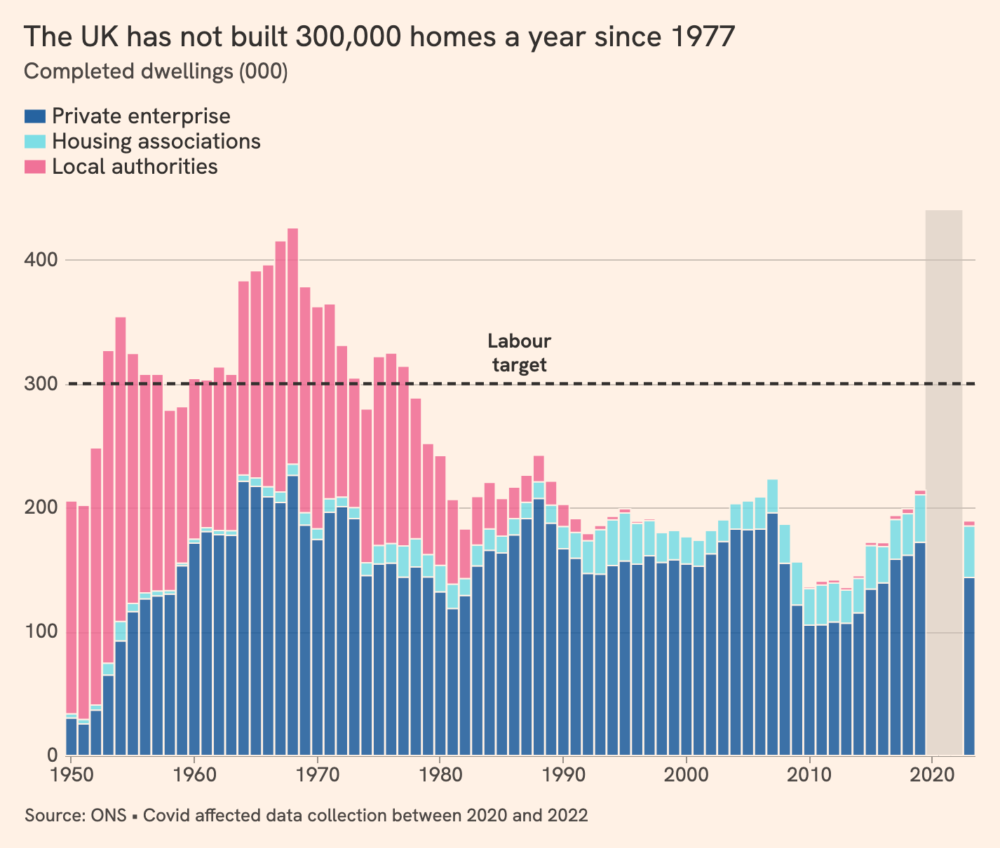

Vega-Lite and Altair
Tutorials
Step-by-step walkthroughs for students learning to make charts with code. Each one starts from a default chart and adds one idea at a time, with code in Vega-Lite and Altair.
Recreating charts

Recreating an FT chart in Vega-Lite
Rebuild the Financial Times' chart of UK housebuilding in nine steps: dates, colours, legends, stack order, layers, annotations and titles.
More examples
- LSE PP434 course repository Weekly notebooks and example charts for the course.
- Vega-Lite examples on GitHub Interactive charts, number formats, and chart fixes.
- Vega-Lite example gallery The official gallery. A good place to start any chart.